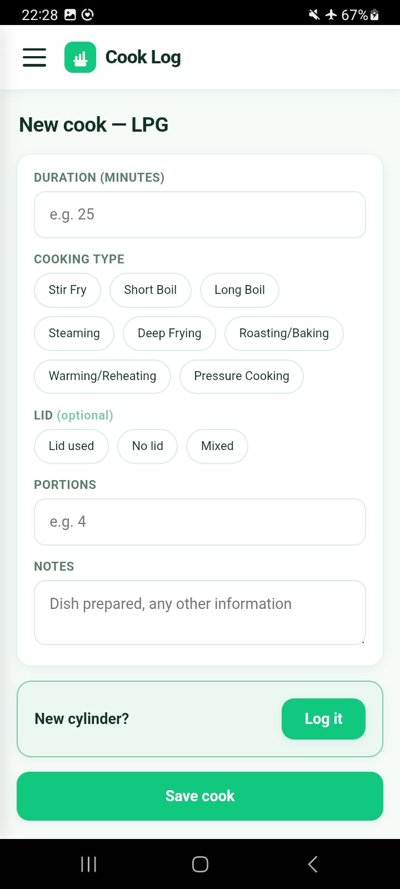
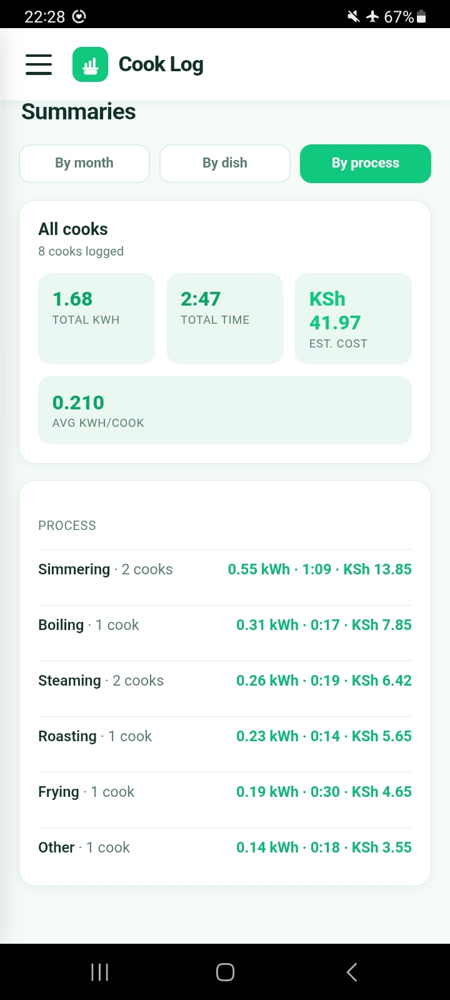

CookLog — a simple tool for modelling household cooking expenses
By GFN Solutions
CookLog is our attempt at trying to understand the choices being made in households around the cooking stack. In return we are aiming to deliver a simple view of monthly cooking expenses, that can help make better choices.
Available for users in Kenya and India, the app is lightweight and offline-first, aimed at clean cooking researchers and business teams who are looking for a tool to support their pilot studies. It can be used for the MECS Cooking Diaries protocol and also addresses some of the gaps in the same.
CookLog helps you log cooking events and fuel purchases, helping develop a clear picture of household energy usage and spend. It includes support for LPG, ethanol and induction cooking. The most mature output is for induction cooking, where a power meter or the kWh usage is available on device.


The app can be used by anyone who is interested in getting a handle on their monthly cooking fuel expenses, but be warned! It requires diligent logging for a useful and accurate output to be obtained.
The longer term goal is to use the data to develop a household energy model that can be used by clean cooking companies, researchers, climate finance teams, policy makers to develop better hardware, GTM plans, pilot studies, financing mechanisms and regulations.
The app works on Android as well as in your browser.
We are inviting interested folks to give the app a spin before we launch it on the Play Store, your feedback is welcome :) You can sign up to be an early tester here.
Have thoughts or questions about this post? Write to us at hello@gfn.solutions.